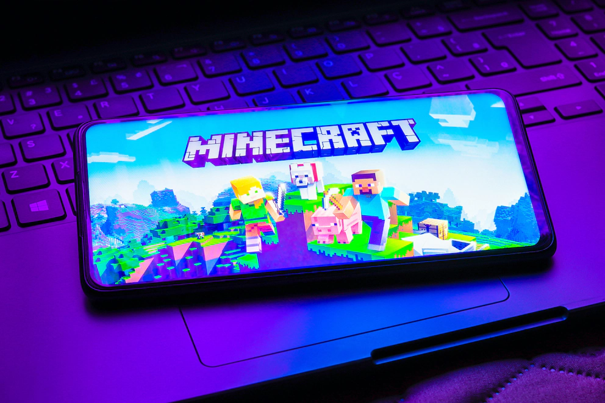
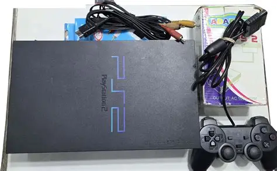
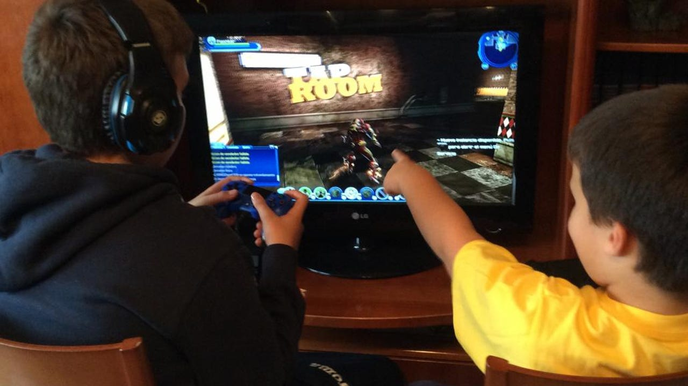
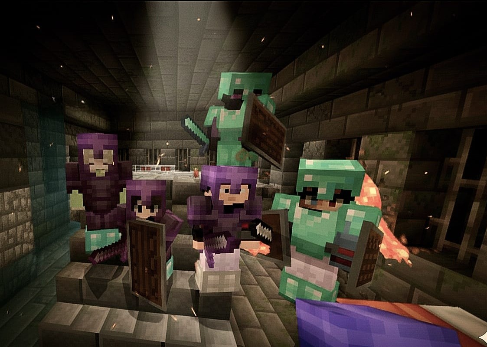
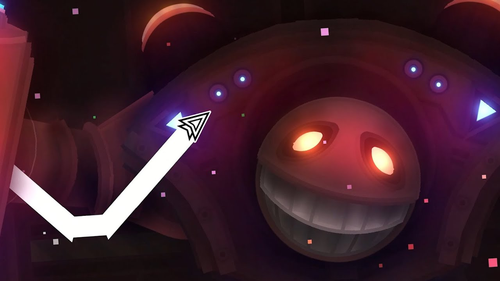
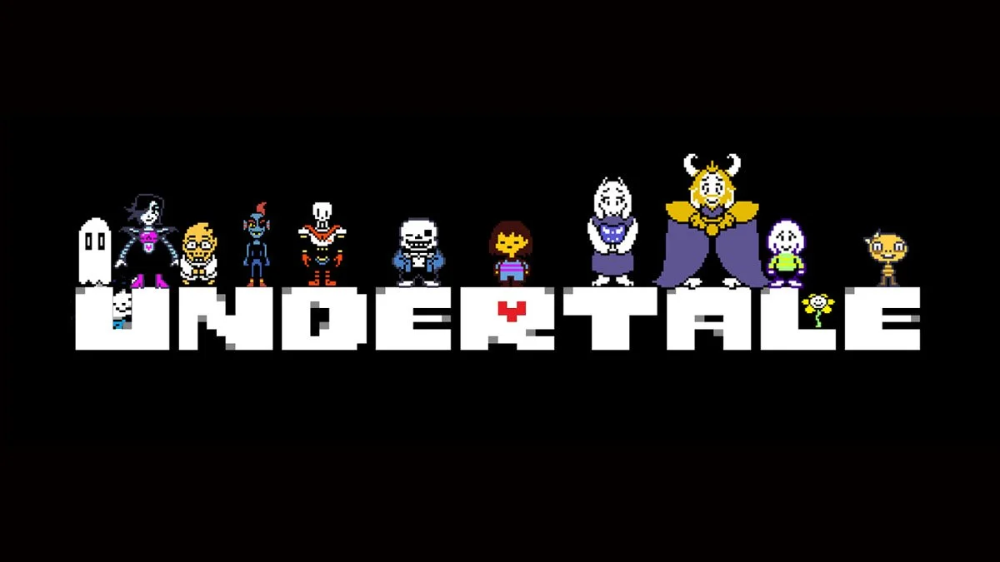
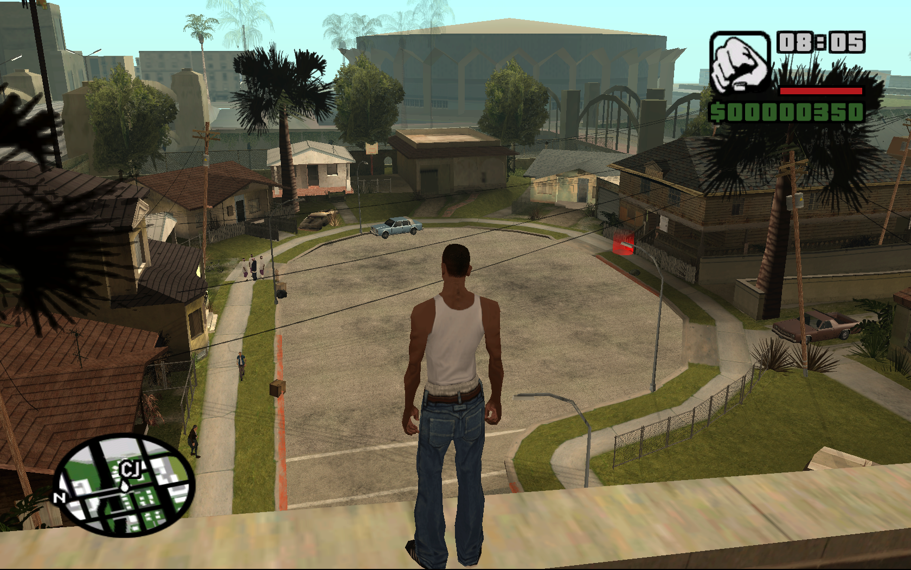
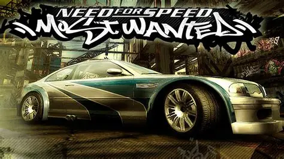

EL MUNDO GAMING

Origen del gusto a los videojuegos
Al vivir en una zona roja en los años 2013 salir al aire libre no era la mejor idea, que solucion tenian mis padres en este tiempo, los videojuegos recientes para entretener a sus hijos sin nesesidade de exponerlos al exterior peligroso (PS2 y celulares)

PlayStation 2Cacarteristicas de los videojuegos
- Patrones que detecta el cerebro y repite a lo largo del juego
- Competitividad entre jugadores
- Craetividad propia (Personalizaciones o apartados propiso como niveles)
- Curiosidades ocultas que motivan completar el juego
- Originalidad en la historia o ambientación

¿Por qué Videojuegos?
Una forma de conseguir entretenimiento y en algunos casos habilidades mentales, como detectar patrones, mejora de reflejos o mejora de la aplicación de la logica
Cada videojuego cuenta con diferentes mecanicas o historias que permiten desarollar nuevos mundos, un gusto muy presente en la actualidad y muy conocido
Minecraft
Videojuego sencillo de jugar con amigos, facil de progresar y disfrutar con pocas horas de juego o experiencia
Tematica de supervivencia en un mundo abierto, para explorar, sobrevirir o expandir tu propio mundo personal


Geometry Dash
juego 2D de funcionalidad simple, no morir con los obstaculos y llegar al final de los niveles diseñados por el creador o por la misma comunidad perteneciente al juego
Ayuda a memorizar patrones en niveles complejos que requieren concentracion y tambien la creatividad en el apartado de creacion de niveles propios
Undertale
juego 2D con tematica de mounstruos subterraneos y humanos, con diferentes finales dependiendo de las desiciones del jugador
Patrones de ataque que permiten estar atento para los movimientos del enemigo y soundtrack que se adapta al ambiente desarrollado por el mismo desarrollador del juego (juego inde)


Gta San Andreas
Juego lanzado para plataformas de Play Station con la implementacion de mapa abierto y seguimiento de misiones para desbloquer historia y recursos que le permitiran vanzar y expandirse al jugador
Con graficos que para su epoca son descatables y conocido por juegos anteriores de la misma saga es bien recibido en su tiempo y recordado en la actualidad, presente en muchas consolas de niños en su tiempo
Need for Speed / Most Wanted
Con su caracteristica principal de implementar persecuciones automovilisticas en un mundo abierto donde el objetivo es ganar carreas clandestinas
Posee 2 ediciones (Most Wanted) (Most Wanted black edition) donde el black edition recibe una notable mejora en los graficos y mas contenido por parte de los desarrolladores
